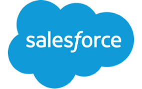

Prime Digital Academy Web Resume
Hello PrimeAcademy! My name is Julian Keefe, and I am a current business/design/ tech hybrid looking to make the leap into full time development. I have experience in UX/ UI design, became involved in my univiersity's startup ecosysystem, and currently work at a top Salesforce implementation firm helping companies move their IT infrastructure to the cloud. My ultimate dream in learning to code is to be able to bring my side-projects from wireframes to fully functional web applications, and work at a company or startup that I believe in the mission and team.
Resume
Education
Indiana University Bachelors Degree
Major: Informatics
Minor: Human Centered Computing
Skills
Salesforce
-Admin Certified. Community Cloud Certified. Current Business Analyst.
Novice Programming
-PHP, Ruby, Python, SQL
Design
-UX, Sketch, UI, basic HTML/CSS
Experience
Appirio Consultant - Indianapolis, IN - June 2017 - Present
Ron Bronson Consulting UX researcher November 2015- May 2016
UITS IT Consulting Campus Tech Suppot October 2013- May 2014
Portfolio
Skillquestor
Skillquestor is an e-learning application centered around learning hobbies and skills using the Internet and good design. As part of my senior capstone project, myself and two other classmates created an iOS app. I served as the priamry UI designer and also worked on creating the database for the app. Listed is an updated UI for a Web app I would like to create.
See Interactive PrototypePodcast Notes
Podcast notes is an app idea I have had for 2 years centering around adding notetaking and documentation to the growing podcast market. I created this with 2 other classmates as part of a PHP course, and also created mockups for a fully -featured version that would incorporate APIs and social sharing to allow users to share notes and connect with content creaters.
Prototype GitHubHoopsUp
HoopsUp is a basketball app I co-founded with a classmate (the one who suggested Prime Academy to me) as part of a student entreprenurship competition @ IU know as the BEST Program. We were one of 3 teams selected and granted with $5,000 in funding to bring our concept to life. The application allowed schools and community centers to rent out their basketball gyms for pickup games for members on our platform. While we had mild success, the project was put on hold due to lack of proper infrastructure. This experience was a huge motivator for me to learn to how to program as I was able to create a successful MVP with mild hype, but was held back by not being able to scale.
PrototypeIUPUI Jagathon Dance Marathon for Riley Hospital Website
I lead the design and implementation of a SquareSpace site for the IUPUI Dance Marathon, which raised over $100,000 for Riley Children's hospital.
Hackathons
Target Case competition 1st Place
Won First Place at IU Target Case Competition and $2500 prize. Our team came up with a concept for new roommates to connect on Facebook and create pre-populated carts and shopping lists for freshman dorms.
PrototypeStadiumHero IUPUI Sports 1st Place & IUPUI Jagstart 3rd Place
StadiumHero was created in a 24 hour hacakthon and polished over the next 2 weeks for the IUPUI Student entreprenurship pitch contest. Our team created a concept and prototype for an AR gamified mobile application to use at sports stadiums to increase fan engagement.
Press
Circle City Hero Indy Civic Hackathon
Competed in 48 hour hacakthon focused on projects to help the city of Indianapolis. Our team created a prototype for an augmented reality game which would provide points, leaderboards, and challenges around doing service in the city.
PrototypeStartup Weekend Bloomington 2015 Second Place
Performed market research for second place project named Canvas that helped capture company-specific knowledge to pass down to new workers.